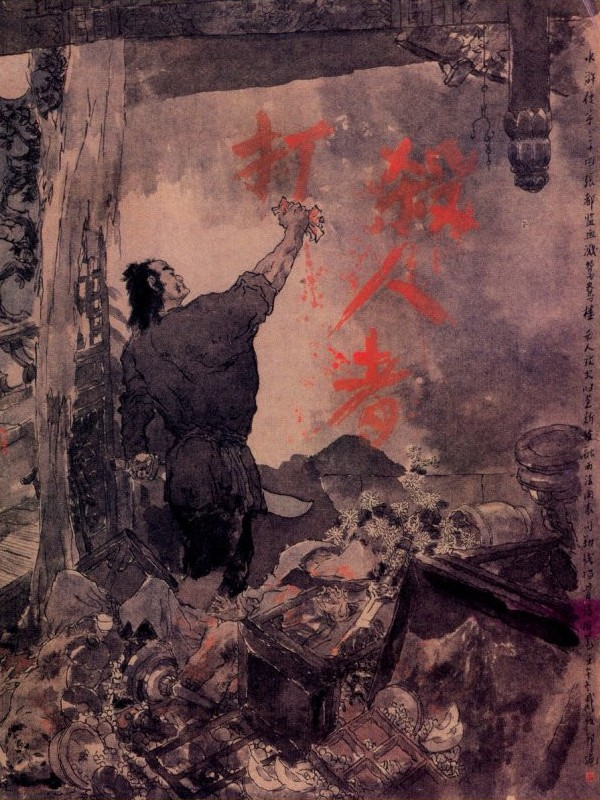
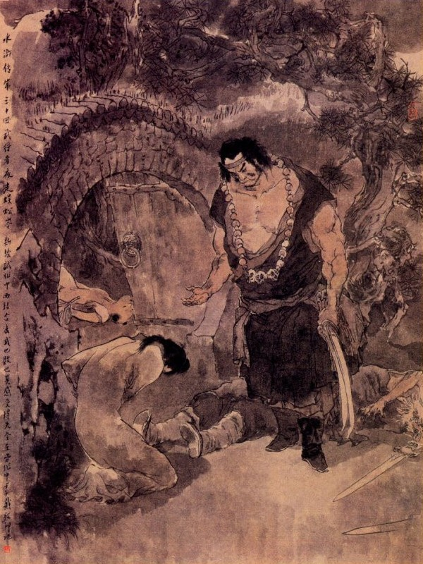

Võ Tòng vác đao trở về Mạnh Châu, vừa đi đường vừa nghĩ quanh co, lại càng căm giận cho bọn nhà họ Trương, không thể nào mà buông tha không giết được. Khi về tới trong thành thì vừa hay đã tối, chàng liền tìm đến một chỗ tàu ngựa ở sau vườn hoa nhà Trương Đô Giám để nấp. Được một lát nghe có tiếng cửa mạch ở góc mở cót két, chàng ngó cổ vào xem thì thấy tên bồi hầu ngựa, cầm cái đèn lồng ở trên nhà đi xuống tàu ngựa rồi quay mà cài cửa lại. Đoạn rồi tên bồi bỏ cỏ cho ngựa ăn, treo đèn lên một chỗ mà trải chăn chiếu cởi áo xống lên giường nằm ngủ. Võ Tòng nghe tiếng trống vừa điểm một canh bốn khắc, chàng bèn lén gót đến trước cửa ở chỗ tàu ngựa mà khua rung làm bộ như người cậy cửa. Tên bồi ngựa nằm trong quát lên rằng:
- Lão gia vừa ngủ mà mày toan đến ăn cắp quần áo à? Còn sớm lắm!
Võ Tòng lặng ngắt, dựng thanh đao vào một bên, rút dao ra cẩm ở tay rồi lại cạy cửa lạch cạch luôn một lúc. Tên bồi ngựa nằm trong nóng tiết nhảy bổ dậy, không kịp mặc áo xống, vội vớ lấy cái đòn gánh, rút then cửa toan mở ra để đánh. Dè đâu vừa mới rút được then cửa ra thì bị Võ Tòng đẩy sấn cánh cửa bước vào mà nắm chặt lấy cánh tay. Cậu bồi ta toan cất tếng kêu lên, lại trông thấy thanh đao sáng nhoáng ở dưới bóng đèn thì kinh hồn khiếp vía, rời rụng chân tay mà sẽ xin kêu van để tha mạng. Võ Tòng nói:
- Có nhận ra ta là ai không?
Tên bồi ngựa nghe thấy tiếng, mới biết Võ Tòng liền kêu rằng:
- Ca Ca ơi! Có việc gì đến tôi xin Ca Ca tha cho tôi!
Võ Tòng lại hỏi:
- Mầy phải nói thực, hiện giờ Trương Đô Giám ở đâu?
- Hôm nay Trương Đô Giám cùng Trương Đoàn Luyện và Tưởng Môn Thần uống rượu suốt ngày, hiện còn ở lầu Uyên Ương đó.
- Mầy nói có thực không?
- Tôi nói dối thì lên đinh ở mồm.
Võ Tòng nói:
- Ừ, nếu vậy thì ta cũng không thể tha cho mày được!
Nói đoạn đâm chết thằng bồi ngựa ra đó. Đoạn rồi lau đao bỏ vào bao, đến trước bóng đèn cởi khăn gói lấy hai tấm áo bông của Thi Ân đưa cho mà thay mặc cẩn thận rồi vớ lấy cái chăn đơn của tên bồi ngựa bọc lấy tiền nong vặt vãnh treo vào một bên cửa. Bấy giờ chàng dựng cánh cửa chéo lên tường thổi tắt ngọn đèn, đi ra cửa cầm lấy thanh đao rồi nhờ bóng trăng suông mà nhảy qua tường vào phía trong. Khi vào tới trong tường, chàng mở then cửa mạch, đi vào rồi khép luôn hai cánh cửa lại. Đoạn rồi theo ánh đèn sáng mà đi thẳng lên bếp. Võ Tòng nấp bên cạnh bếp, nghe tiếng hai đứa thị nữ, đương đứng ở trong bếp, phàn nàn với nhau rằng: "Hầu hạ suốt ngày hôm nay, bây giờ chưa ngủ. lại còn nước nước với nôi nôi! Hai anh khách ấy rõ không biết dơ, chén đã say khướt ra, thế mà còn chưa chịu xuống lầu đi ngủ, không hiểu rằng chuyện trò đến bao giờ?”
Hai ả đương oán hận với nhau ở trong bếp thì Võ Tòng ngoài này dựng thanh đao một chỗ rồi rút con dao còn vấy máu ở trong túi ra, đẩy cửa mở bếp mà nhảy tót vào, vớ lấy chị ả đứng ngoài đâm cho một nhát. Còn chị kia toan té cẳng chạy thì gân cốt rủn ra mà không sao chạy được, toan há mồm để kêu thì mồm lưỡi líu lại mà không kêu lên, đành cứ tái người sạm mặt đứng im đấy chịu chết. Võ Tòng sấn đến đâm một nhát dao ngã lăn xuống đất rồi tắt đèn trong bếp, quay ra theo bóng trăng mà lên nhà trên. Nguyên Võ Tòng trước đã ở đó ít lâu, nên đường ngang lối tắt đều thuộc cả, chàng liền theo lối tắt đi thẳng đến lầu Uyên Ương. Khi tới chân thang, chàng ta sẽ rón chân tay, sờ bò lần lên thang gác. Bấy giờ bọn đầy tớ hầu hạ đã mỏi mệt, không còn anh nào đứng lảng vảng ở gần đấy, chỉ nghe tiếng ba người là Trương Đô Giám, Trương Đoàn Luyện và Tưởng Môn Thần vẫn còn nói chuyện với nhau. Võ Tòng lắng tai nghe thấy Tưởng Môn Thần tán tụng luôn mồm mà rằng:
- Việc này nhờ ở Tướng Công, nên mới báo thù được thế. Chúng tôi sẽ hết lòng báo đáp Tướng Công.
Trương Đô Giám nói rằng:
- Cái đó nếu tôi không nể Trương Đoàn Luyện đây thì có khi nào làm thế được. Cũng may ông tuy tốn mất ít tiền, song được như thế là tốt lắm! Bây giờ thằng ấy chết rồi thì phải. Tôi bảo nó đưa đến Phi Vân Phố là hạ thủ, không biết đã xong chưa? Để sáng mai bốn đứa ấy về đây xem sao?
Rồi thấy Trương Đoàn Luyện nói rằng:
- Bốn thằng giết một thằng thì làm gì chẳng xong?
Lại đến Tưởng Môn Thần nói rằng:
- Chúng tôi cũng dặn mấy tên đồ đệ như vậy, chắc là sáng mai thế nào cũng có tin về báo.
Võ Tòng nghe ngần ấy câu chuyện thì lửa giận trong lòng dần dật bốc lên cao mấy nghìn trượng, như xung đột tới trời, liền tay phải cầm đao, tay trái xòe năm ngón tay rồi nhảy sấn vào trong lầu. Khi đó dăm ba ngọn nến thắp linh tinh, một vài chỗ bóng trăng soi chếch mếch. Trong lầu sáng như gương, các đồ cốc chén cốc rượu chè đều chưa thu dọn sạch. Tưởng Môn Thần ngồi ở trên ghế, chợt trông thấy Võ Tòng nhảy vào thì giật mình hết vía, bao nhiêu đảm lượng can tâm, đều theo lên mây trời mất cả. Chàng ta hớt hãi vội đứng mau dậy, dè đâu thấy đến vút một cái thì con dao Võ Tòng đã ném luôn một nhát cả người lẫn ghế đều đổ lăn ra. Võ Tòng chém xong vừa quay người lại thì thấy Trương Đô Giám đương té cẳng toan chạy, chàng liền chém cho một nhát vào đầu, xẻ hẳn từ tai đến cổ mà ngã vật ra sàn gác. Còn Trương Đoàn Luyện nguyên là một tay quan võ sĩ xuất thân, bây giờ tuy có chếch choáng hơi men, song sức lực cũng còn hăng hái, nhân trông thấy hai người bị đâm chết, một mình khó chạy cho xong, liền vớ lấy một cái ghế múa lên để đánh Võ Tòng.
Võ Tòng hăng máu bắt lấy ghế, đẩy cho một cái thực mạnh, Trương Đoàn Luyện bị ngã lăn chiêng ra đằng sau rồi Võ Tòng sấn vào mà cắt hẳn lấy đầu. Đằng kia Tưởng Môn Thần tuy bị một nhát thương, song vẫn còn khí lực, liền cố mà lóp ngóp bò dậy, Võ Tòng lại quay lại, phi chân trái đá lăn ngã xuống rồi chân phải đè lên bụng mà chém đứt lấy đầu. Đoạn rồi quay lại mà cắt lấy đầu Trương Đô Giám.
Bấy giờ trên bàn còn bày rượu thịt ở đó, Võ Tòng liền rót rượu uống luôn mấy cốc rồi xé lấy một miếng áo của bọn chết kia mà thấm máu, viết mấy chữ to lên vách vôi: "Kẻ giết người chính là Võ Tòng đánh hổ". Chàng giết xong quay ra chọn cốc chén ở trên bàn lấy một vài thứ quý báu giắt vào mình, còn thì vất bừa ở đó rồi trở ra toan xuống gác. Vừa khi ấy nghe tiếng phu nhân ở dưới nói lên rằng:
- Bọn các quan ở trên gác say rượu lắm hẳn? Bây đâu lên gác đỡ các ngài đi nghỉ đi!

Phu nhân nói chưa dứt lời thì đã có hai người ở dưới đi lên thang gác. Võ Tòng nấp vào đầu thanh gác nom ra thì chính là hai đứa thân hầu Trương Đô Giám, vừa mới trói mình dạo trước, chàng liền đứng nấp vào xó tối, để nhường cho hai anh đi vào gác rồi đứng ra mà chặn đường xuống. Hai anh kia vào đến sàn gác, thấy ba cái xác chết nằm sóng sượt ở trên vũng máu thì kinh sợ hết hồn, cứng lưỡi không thể nào kêu lên thành tiếng, vừa toan tháo chạy ra thì Võ Tòng đã tiến vào giết phăng một anh, còn anh nữa thì quỳ xuống kêu xin tha mạng. Võ Tòng miệng nói:
- Không tha được!
Tay thì nắm chặt lấy thằng kia rồi cũng cho một nhát dao kết liễu nốt. Đoạn rồi chàng nghĩ thầm: "Đánh rắn phải đánh dập đầu, dẫu cho chết đến trăm đứa cũng chỉ một chết mà thôi". Liền lăm lăm vác đao đi xuống gác. Phu nhân ở dưới nhà hỏi lên rằng:
- Trên gác làm gì mà ầm ĩ gớm lên thế?
Vừa hỏi xong thì Võ Tòng đã đi vào đến trước cửa phòng. Phu nhân thấy người to lớn bước vào trong bụng lấy làm quái lạ, cất mồm vừa hỏi một tiếng.
- Ai?
Thì Võ Tòng đã đưa dao vào chém ngay một nhát; ngã lăn xuống đất, Võ Tòng lấy chân đè lên mà cắt lấy đầu. Dè đâu cưa mãi không thấy đứt. Võ Tòng giơ dao lên hé bóng trăng soi cửa để xem thì thấy lưỡi dao đã quăn mẻ ra, như người bằm hỏng vậy. Chàng thấy thế, vội vàng quay xuống bếp, vớ lấy thanh đao rồi lại sồng sộc đi lên trên nhà. Khi đó dưới bóng đèn sáng trông thấy đứa bé đương cầm đèn soi xác của Phu nhân trên mặt đất mà kêu lên rằng:
- Trời ơi! Khổ!
Võ Tòng thấy vậy, vác dao vào chém chết Ngọc Lan, còn hai đứa bé con cũng cho mỗi đứa một nhát. Đoạn rồi chạy ra nhà giữa, trước hết cài kín cửa ngoài rồi quay vào lùng quanh trong nhà, thấy có ba người đàn bà ở đó, liền chém cho mỗi người một nhát nằm chết đứ đừ ra đất. Lúc đó máu uất ở trong mình, cùng với ngọn máu giết người đã tiêu tan đi hết, Võ Tòng liền nói một mình rằng:
- Bây giờ ta mới được vừa lòng, thôi đi ngay mới được.
Nói đoạn bỏ hết bao dao, cầm một thanh đao lớn đi ra ngoài cửa mạch, đến tầu ngựa vớ lấy khăn gói, bỏ thêm mấy thứ cốc chén vào trong đó rồi gói bọc cẩn thận, buộc kỹ vào lưng mà quay ra vườn sau để đi.
Canh khuya gió oán tung trời,
Gươm pha máu đỏ trăng soi dạ vàng.
Trăm năm qua gác Uyên Ương
Thử xem hàng máu trên tường bao phai
Võ Tòng đi tới thành tự nghĩ:
- Nếu dùng dằng đợi khi mở cổng thành mới ra thì tất là bị bắt bất nhược thừa lúc ban đêm mà chạy lấy thoát cho rảnh. Nghĩ đoạn liền nhảy lên mặt thành đứng nom ra ngoài thấy địa thế cũng không cao là mấy, chàng liền ném thanh đao xuống trước rồi co cẳng mà nhảy theo xuống sau. Khi nhảy xuống bên cạnh hào thấy bóng trăng soi sáng, hào nước không sâu, chàng lại xắn quần cởi lá đáp rồi xắn quần xắn áo lội qua hào mà sang bên kia. Sang đến bờ hào bên kia, chàng sực nhớ đến trong gói có mấy đôi giầy của Thi Ân mang cho, liền cởi gói ra lấy một đôi để đi. Bấy giờ nghe tiếng trống trong thành đã điểm bốn canh ba khắc, chàng lại nói thầm một một mình rằng: "Trời ơi! Cái lòng phẫn uất của ta bây giờ mới được thoả, nhưng quanh đây không còn chỗ nào khả dĩ lưu luyến được lâu, âu là ta đợi tìm nơi khác mà xa lánh thì hơn.”
Chàng nghĩ vậy, vác dao theo đường nhỏ mà đi sang bên hông. Đi được một quãng xa ước chừng gần hết trống canh năm, trời còn tối mờ mịt chưa sáng. Võ Tòng xông pha hăng hái suốt đêm, đến đó nghe trong mình mệt nhọc, các đầu roi bị đánh, lại phát lên rất là đau đớn. Chợt đâu thấy một tòa nhà cổ miếu ở trong đám rừng cây gần đó, Võ Tòng liền đi rảo bước chạy vào, đựng đao vào một chỗ rồi cởi khăn gói làm gối mà nằm vật xuống để ngủ. Võ Tòng vừa toan nhắm mắt ngủ thì bỗng có hai người đem dây móc vào móc chặt lấy cổ Võ Tòng rồi hai người nữa chạy xổ ra mà trói chặt lại. Bốn người bàn với nhau rằng:
- Thằng này to béo lắm, ta đem mau về cho Đại ca mới được.
Nói xong cướp lấy đao và khăn gói Võ Tòng rồi túm nhau vào kéo như kéo dê, không cho đặt chân xuống đất mà dong thẳng đi. Lũ kia vừa đi vừa nói với nhau rằng:
- Thằng cha này trên mình có vệt máu, không biết rằng ở đâu đến đây? Có lẽ nó đi trộm cướp ở đâu hẳn.
Võ Tòng nghe vậy, lặng ngắt không mở mồm nói một câu gì cả. Đi được độ bốn năm dặm đường, đến một nơi nhà cỏ, liền kéo Võ Tòng mà lôi vào đó. Khi tới nơi, chúng thắp đèn lên rồi lột xống áo Võ Tòng ra mà trói vào cột. Võ Tòng liếc mắt nom thấy trên sà nhà bên bếp treo toàn thị thịt đùi người thì nghĩ thầm trong bụng rằng: "Mình đen quá, lại vớ phải thần chết rồi, còn sống thế nào được nữa. Nếu biết rằng cơ hội thế này thì thà rằng ra thú ngay ở Tri Phủ Mạnh Châu, để cho nó chém cho một nhát, lại còn để tiếng được với đời.”
Bấy giờ bốn người kia trói xong rồi, cầm lấy khăn gói của Võ Tòng mà gọi lên rằng:
- Đại ca, Đại tẩu dậy mau mau, chúng tôi đã tìm được một món hàng hóa ở đây.
Nói đoạn thì thấy có tiếng ở nhà trước ứng lên rằng:
- Ta đến đây, chúng bây chớ hạ thủ vội.
Được một lát có hai người ở nhà ngoài đi vào, Võ Tòng ngửa cổ lên nom, thấy một người đàn bà đi sau anh chàng to lớn mà sồng sộc bước vào. Hai người nhìn kỹ Võ Tòng rồi người đàn bà nói lên rằng:
- Chết nỗi! Có phải là thúc thúc đó không?
Anh chàng đàn ông cũng kêu lên rằng:
- Thôi phải rồi, chính phải là anh em ta đây rồi.
Hai người ấy là ai? Nguyên vợ chồng Thái Viên Tử Trương Thanh, kết nghĩa anh em với Võ Tòng khi trước. Bấy giờ hai người thấy vậy, liền cởi trói cho võ Tòng; rồi mời ra nhà ngoài nói chuyện. Võ Tòng đem hết mọi chuyện, từ khi bái biệt vợ chồng Trương Thanh, cho đến khi bị bắt ở đây, kể hét cho hai người nghe. Khi ấy bốn tên bắt Võ Tòng lúc nãy, nghe chuyện liền quỳ xuống mà nói rằng:
- Chúng tôi là người trong nhà Trương Thanh đại ca đây, nhân vì mấy hôm nay đánh bạc thua luôn phải vào rừng kiếm cách xoay xở, bất đồ thấy ngài ra dáng mệt nhọc vào miếu để nằm, nên chúng tôi mới dám hạ thủ trói bắt. Song cũng may đại ca tôi dặn, chỉ cho bắt sống, đem về không được hại, nếu không thế thì có lẽ hại đến tính mệnh ngài. Điều đó thực chúng tôi lầm lỡ xin ngài tha tội cho.
Vợ chồng Trương Thanh cười rằng:
- Chúng tôi cũng vì hơi ngại trong lòng, nên bấy lâu bao nhiêu hàng hóa phải để nguyên sống mang về mà không cho hạ trước, nhưng nào có ai hiểu đâu được tâm sự của mình. Nay nếu em ta đây mà không nhọc mệt thì không nói gì đến bốn các người, dẫu đến bốn mươi kẻ cũng khó lòng mà tới gần được.
Bốn anh kia nghe nói chỉ cúi đầu lạy tạ Võ Tòng không thôi. Võ Tòng bảo chúng đứng dậy mà nói rằng:
- Thôi được, bây giờ các anh không có tiền đánh bạc, để đây ta thưởng cho.
Nói đoạn bắt lấy khăn gói mở ra. Lấy mười lượng bạc vụn cho bốn người chia nhau. Trương Thanh thấy vậy cũng lấy ra ba lạng bạc nữa mà thưởng thêm cho chúng. Chúng được tiền lạy tạ Võ Tòng và Trương Thanh mà đem ra chia nhau.
Trương Thanh bảo với Võ Tòng rằng:
- Nguyên hiền đệ không biết: Từ khi hiền đệ đi rồi, chỉ e hoặc có khi lỡ xảy việc chi mà lại trở về đây, nên tôi phải phòng bị dặn chúng từ trước hoặc khi chúng gặp mà lỡ ra e cự không nổi thì chúng tất hành hung, bởi thế lại phải cấm không cho đem dao mác gì đi theo cả. Vừa rồi tôi chợt nghe nói, đã có bụng ngờ, quả nhiên là hiền đệ.
Tôn Nhị Nương nói rằng:
- Mấy hôm trước tôi chỉ nghe tin thúc thúc say rượu đánh được Tưởng Môn Thần, ai ai cũng lấy làm kinh sợ; đến nỗi bao nhiêu đám khách thương ỏ Khoái Hoạt Lâm qua lại đây, không ai là không tán tụng luôn luôn. Ai ngờ về sau lại xảy ra những việc kinh thiên động địa, thế mà vợ chồng tôi không biết chi cả. Bây giờ thúc thúc đương mệt nhọc xin vào trong phòng nghỉ một lúc rồi sẽ nói chuyện.
Trương Thanh bèn dẫn Võ Tòng vào buồng khách nghỉ rồi hai vợ chồng sai làm cơm rượu để sắp sửa thết đãi Võ Tòng.
Nói về bọn người nhà Trương Đô Giám ở Mạnh Châu, có kẻ lẩn nấp trốn được mãi đến khi trời sáng mới dám thò ra, hô gọi các quân lính cùng người nhà người cửa túm vào xem xét rồi bảo nhau sang trình quan phủ. Quan phủ nghe nói cả kinh, hoả tốc sai người đến kiểm soát số người bị chết và dò xem lối quân hung phạm ra sao. Hôm sau chúng về báo Tri Phủ rằng:
- Thoạt tiên quân cướp vào tầu ngựa, trút bỏ hai tấm áo cũ ở đó. Sau vào đến bếp giết chết hai đứa thị nữ và bỏ một con dao hành hung đã quằn mẻ tại bên cửa bếp. Đoạn rồi lên lầu Uyên Ương Trương Đô Giám cùng hai tên người nhà và người khách là Trương Đoàn Luyện, Tưởng Môn Thần rồi lấy máu viết mấy chữ: "Kẻ giết người chính là Võ Tòng đánh hổ" lên tường vôi. Dưới nhà gác lại giết một phu nhân, một thị nữ tên là Ngọc Lan, hai người con bé và ba người đàn bà, cộng tất cả là giết chết mười lăm mạng và mất một bộ sáu cái chén uống rượu bằng vàng bạc.
Tri Phủ nghe rõ đầu đuôi liền sai người canh giữ bốn mặt cổng phủ rồi kiểm soát quân mã cùng các viễn bộ tập, các thầy Trưởng Phố đến khắp các nơi để khám bắt Võ Tòng. Sáng hôm sau lại thấy Lý Trưởng sở tại Phi Vân Phố đến trình bốn người bị giết chết, hiện còn vệt máu tươi dưới chân cầu và xác chết ở vũng nước. Tri Phủ tiếp được giấy trình, liền gọi Huyện Úy lên, nhất diện sai người đến Phi Vân Phố khiêng bốn xác chết lên để khám, hai người là lính phủ còn hai người nữa, đều có người nhà đến nhận xác đem chôn và làm giấy kêu quan bắt hung thủ đền mạng. Trong thành bắt đóng cửa luôn ba ngày để đến từng nhà khám xét.
Tri Phủ lại sức giấy cho các viên cai quản các thuộc địa hạt trong phủ, phải đến từng xã, từng thôn, từng xóm mà tìm bắt hung thủ. Lại viết tên tuổi và hình dung Võ Tòng xuất tiền ba nghìn quan treo giải thưởng cho người nào bắt được tên phạm. Đoạn rồi thảo công văn Tân Ước sức các nơi, ai biết chỗ Võ Tòng trốn tránh, đem lên trình quan được thưởng; bằng ai chứa chấp nếu bắt được thì bị tội cùng với phạm nhân. Cách ba hôm sau, tiếng tăm ầm ĩ khắp nơi, đám thám tử cùng đám tập bộ không đâu là không lai vãng dò xét. Trương Thanh nghe tin ấy, liền báo với Võ Tòng rằng:
- Ngày nay nếu quan quân nhân truy nã riết như vậy thì hiền đệ ở đây rất là không tiện. Việc này không phải là tôi sợ chi, song nếu lỡ ra quan quân dò xét đến nơi thì bây giờ làm sao cho được? Vậy nay tôi nghĩ chỉ chốn này, trước đây cũng đã nói qua cho hiền đệ biết rồi nhưng chẳng hay hiền đệ có thuận đi cho không?
- Trong mấy hôm nay, tôi đã nghĩ ở đây không sao mà yên được. Song như tôi có một người anh đã bị chị dâu bất nhân giết chết đi, đến đất này lại bị người ta hãm hại, thân thế gian truân họ hàng không còn có ai, để mà nương tựa! Nay Ca Ca có lòng tốt mà tìm chốn cho tiểu đệ nương thân thì còn có điều chi mà không thuận? Ca Ca cứ nói cho tôi biết là ở đâu?
- Chính là chùa Bảo Châu trên núi Nhị Long ở Thanh Châu là nơi Ca Ca Lỗ Trí Thâm tôi, cùng Dương Chí đương làm bá một phương đó. Nay hiền đệ nếu muốn an thân thì tất phải đến đấy mới xong, còn có đi đâu được hơn nữa? Vả chăng ở đấy đã nhiều phen viết giấy bảo tôi nhập bọn song ý tôi còn lưu luyến chỗ này chưa có thể đi được. Vậy nay tôi xin viết thư nói rõ đầu đuôi và tiến dẫn hiền đệ lên đó thì chắc là họ phải vui lòng mà nhận, hiền đệ nghĩ sao?
- Đại ca nói phải lắm! Tôi cũng định bụng đã lâu, song chưa phải thời, nên chưa làm được.
Trương Thanh liền viết một phong thư kỹ lưỡng, đưa cho Võ Tòng rồi bày tiệc để tiễn. Bấy giờ Tôn Nhị Nương chợt bảo với Trương Thanh rằng:
- Làm thế không được! Nếu thúc thúc cứ thế mà đi, ngộ lỡ ra bị người ta bắt được thì sao?
Võ Tòng nói:
- Tẩu tẩu thử nói xem làm sao mà tôi đi không được? Làm sao mà họ bắt được tôi?
Tôn Nhị Nương nói:
- Hiện nay quan tư sức giấy đi các nơi, vẽ hình vẽ ảnh, thưởng ba nghìn quan tiền để bắt; Vả chăng trên trán thúc thúc có kim ấn rõ ràng, còn ai không biết? Như thế mà đi đường thì giấu thế nào nổi được người ta?
Trương Thanh nói:
- Kim ấn trên mặt thì dán miếng thuốc cao che đi cũng được chứ sao?
Tôn Nhị Nương cười rằng:
- Thiên hạ chỉ có một mình khôn, con người ta dễ thường ngu ngốc cả. Bọn công nhân bây giờ phỏng làm như thế mà bịt mắt họ được chăng? Tôi có một cách này chỉ sợ thúc thúc không chịu nghe thôi.
Võ Tòng nói:
- Tôi đã là thằng tù lánh nạn thì còn việc gì mà không theo được nữa?
Tôn Nhị Nương cả cười mà rằng:
- Tôi nói ra đây, thúc thúc đừng giận nhé.
- Xin tẩu tẩu cứ nói, thế nào tôi cũng vâng.
- Hai năm trước có một người đi qua đây, bị tôi giết chết, câu chuyện ấy thúc thúc đã nghe rồi. Hiện nay còn một cái mũ nhà sư bằng sắt, một cái áo xống tràng đen, một cái thắt lưng thưa sắc tạp, một bản hộ điệp, một chuỗi tràng hạt, bằng một trăm linh tám cái trối xương người, một đôi giầy bằng da cá nhà táng và hai khẩu giới đao bằng xác hoa. Hai khẩu đao ấy đêm đêm thỉnh thoảng lại kêu, ngày trước thúc thúc đã xem rồi thì phải. Ngày nay đã định trốn nạn thì trừ phi cắt tóc giả làm một người hành giả đội mũ che kim ấn đi rồi cầm lấy tờ hộ điệp ấy để hộ thân thì mới có thể được. Thúc thúc mặt mũi cũng giống, tuổi tác cũng vừa, thực là nhân duyên tiền kiếp, cứ nhận ngay tên họ người ấy mà đi, không còn ai hỏi đến nữa. Thế có được không?
Trương Thanh vỗ tay khen rằng:
- Được lắm, thế mà không nghĩ tới, thúc thúc định sao?
Võ Tòng nói:
- Cái đó thì tôi bằng lòng rồi, song chỉ sợ không giống được mà thôi.
Trương Thanh nói:
- Để tôi thử mặc vào cho thúc thúc xem sao.
Tôn Nhị Nương liền vào buồng đem các thứ mũ áo ra cho Võ Tòng mặc.
Võ Tòng liền mặc áo thắt lưng, bỏ xõa tóc xuống rồi đội mũ đen đeo tràng hạt không khác gì một nhà sư vậy. Trương Thanh cùng Tôn Nhị Nương cả cười mà rằng:
- Thực là kiếp trước đã định, cho nên mới được như thế.
Võ Tòng liền cầm gương soi mặt cũng phải phì cười mà không nhận được. Trương Thanh hỏi:
- Thúc thúc cười chi như thế?
Võ Tòng nói:
- Tôi trông tôi, tôi cũng bật cười. không biết làm sao, tự nhiên lại hóa ra một nhà sư. Bây giờ đại ca đem cắt tóc cho tôi vậy.
Trương Thanh liền lấy kéo ra cắt tóc cho Võ Tòng rồi sắp sửa đồ đạc cho Võ Tòng đi. Trương Thanh lại bảo Võ Tòng để các đồ chén bạc của Trương Đô Giám lại đây rồi bọc thêm một ít tiền nữa vào cho Võ Tòng và sai thợ khâu một cái túi gấm, đựng tờ hộ điệp để cho Võ Tòng buộc sát vào trước bụng. Chiều hôm ấy Võ Tòng cơm rượu xong rồi, thu thập các đồ hành lý, giắt hai khẩu giới đao vào lưng rồi từ tạ vợ chồng Trương Thanh mà đi lánh nạn. Trương Thanh cầm tay than vãn dặn rằng:
- Hiền đệ đi đường phải nên cần để tâm cẩn thận, rượu không nên uống lắm, không nên tranh khí với ai, phàm các công việc chớ có làm liều làm bạo, thế mới giữ được thái độ kẻ tu hành mà khỏi bị người ta dò biết. Khi nào đến Nhị Long Sơn thì viết thư về ngay cho tôi biết, vợ chồng tôi ở đây cũng không phải là kế lâu dài, có lẽ nay mai sẽ xếp dọn mà theo lên đó cũng nên. Hiền đệ cần phải bảo trọng lấy thân và nói với Lỗ, Dương, hai Đầu lĩnh rằng vợ chồng tôi xin gửi lời bái chúc.
Võ Tòng vâng lời rồi từ tạ ra đi. Hai vợ chồng đứng trông theo một lúc rồi vỗ tay mà khen rằng:
- Quả nhiên rõ là một ông hành giả, không còn ai dám ngờ nữa?
Bấy giờ đương dạo thàng mười, ngày ngắn không đầy gang tấc, Võ Tòng giã từ Thập Tự Phi đi vội vàng được một lúc thì trời đã sắp tối, được vào khoảng năm mươi dặm đường, chợt trông thấy một tòa núi cao đứng sừng sững ở trước mặt. Võ Hành Giả liền mau bước mà đi lên núi. Khi lên tới gần đỉnh núi, chàng đứng dừng lại, quay trông sang phía bên đông, đã thấy vừng trăng mới mọc sáng rọi cây cỏ trên non, rất là thích mắt.
Đương khi trông ngắm ngẩn ngơ thì chợt thấy có tiếng người cười ở khu rừng trước mặt. Võ Hành Giả liền nói một mình rằng: "Quái lạ ở đây núi non tịch mịch thế này, còn làm chi mà có tiếng người cười nói?” Chàng nghĩ đoạn rảo bước đi sang bên rừng để xem. Chợt thấy trong rừng thông bên cạnh núi có một tòa am, ướt có mười mấy gian nhà lá, nhà mở hai cánh cửa sổ có một tiên sinh cùng mấy người con gái cùng ngồi, đương đùa rỡn xem trăng ở đó. Võ Hành Giả thấy vậy thì ngạc nhiên nghĩ thầm rằng: “Anh này trông ra mặt tu hành xuất gia mà sao dám làm những việc thế kia!" Chàng vừa nghĩ vừa rút hai khẩu giới đao sáng nhoáng, giơ ra bóng trăng để xem rồi lại nói một mình rằng: "Mấy khẩu đao này tốt thực vào tay ta, ta chưa thử một lần nào? Âu là ta đem tiên sinh khốn nạn này mà thí nghiệm một cái xem sao?”
Chàng nói vậy, liền để một khẩu ở ngoài, còn một khẩu lại đút vào trong bao, xắn hai tay áo lên đến vai rồi lượn ra lối trước am mà gõ cửa. Tiên sinh ngồi trong nghe tiếng gõ cửa liền khép hai cánh cửa sổ đằng sau lại. Võ Hành Giả lại tìm một tảng đá mà gõ ầm lên. Chợt có tiếng ken két, cánh cửa bên cạnh mở tung ra rồi có một tên đạo đồng chạy ra quát rằng:
- Anh là người nào? Nửa đêm gà gáy dám đến đây gõ cửa làm ấm ĩ đến thế?
Võ Hành Giả trợn ngược hai con mắt ghê gớm rồi quát lên rằng:
- Hãy đem thằng đạo đồng này mà tế đao đã.
Nói xong giơ đao lên đánh beng một cái, tên đạo đồng mất hẳn đầu ra một bên mà ngã vật ngay xuống đất. Bấy giờ tiên sinh kia ngồi trong am mà kêu to lên rằng:
- Đứa nào dám giết thằng đạo đồng của ta?
Nói xong nhảy tót xuống múa hai thanh bảo kiếm xông ra để đánh Võ Tòng.
Võ Hành Giả cười mà rằng:
- À! Thằng này lại gãi chính vào chỗ ngứa. Được đến đây để ta thử đao.

Nói đoạn rút khẩu giới đao nữa ở trong bao ra rồi hai tay múa hai khẩu đao đón đánh tiên sinh kia. Đôi bên đấu nhau ở dưới bóng trăng thanh, kẻ đi người lại, kẻ đỡ người đâm, lên xuống quanh quẩn như bốn đạo hào quang, kết thành một đoàn lãnh khí vậy.
Hai bên cự địch đương hăng thì bỗng dưng có tiếng đao vang động rồi có một người ngã lăn ra đất. Mới hay:
Mấy hàng mưa tuyết đầu người rụng,
Tiếng bóng trăng hàn tiếng kiếm reo,
Làm trai thứ nhất ba điều,
Một là thân thế riêng chiều tự do.
Hai là giết sạch quân thù,
Moi gan tàn ác đền bù núi sông.
Ba là ngang dọc vẫy vùng.
Làm cho tỏ mặt anh hùng ngàn thu.
Ví chăng sống chẳng ra trò,
Thì tu mi với liễu bồ khác chi?
Lời bàn của Thánh Thán
Đọc hết một hồi máu chảy lầu Uyên Ương mà than cho người thiên hạ mài dao giết người, sao thấy lạ thay! Thầy Mạnh nói: Giết cha người ta ắt người ta phải giết lại cha mình; Giết anh người ta, ắt là người ta phải giết lại anh mình, trong lúc ta mài dao, với kẻ kia mài dao, nào khác gì đâu! Thế thì chẳng phải tự sát, chẳng qua gián tiếp, đổi tay dao mã để giết cha anh. Hỡi ôi! Há chỉ thế đâu, đổi tay dao mà giết, còn lấy dao ta để giết người, để cho dao người giết lại ta cũng đều là tự sát, như thế ta chỉ thấy dao giết người của ta mà không thấy dao giết ta của người, đến khi họa cơ đưa lại, mới giật nảy mình, như lũ ba người Trương Đô Giám, Trương Đoàn Luyện và Tưởng Môn Thần ngộ hại, còn đau mà chẳng đau lòng! Đương khi trao ý kiến cho công sai mà còn khiến thêm hai đồ đệ đi theo giúp sức, há chẳng từng ân cần hỏi đến: Ngươi có mang dao không? Hai người trả lời có dao! Thì lại hỏi đến: Dao có sắc không? Hai người nói: Tốt! Thì lại hỏi đến: Dao đã mài chưa? Hai người nói: Mới mài! Thì lại hỏi đến: Dao ấy có giết nổi một Võ Tòng không? Hai người lại nói: Đến mười lăm thằng như Võ Tòng cũng giết nổi; há một Võ Tòng? Đương khi ấy há chẳng khoe dao tốt mà đi, cầm mà múa bay mà tới để chém cho đứt, thế rồi, đầu Võ Tòng phải rơi, máu Võ Tòng phải đổ, oan Võ Tòng phải báo, mệnh Võ Tòng phải hết. Bấy giờ thử mà xem, chém mà xách, đem về cho mọi người thấy, để ngợi khen uống rượu vui mừng?
Lũ ba người Trương Đô Giám, Trương Đoàn Luyện, Tưởng Môn Thần, coi ở trong thiên hạ to lớn kia, với quần chúng muôn nhà, không còn ai được vui sướng cho bằng cuộc yến ẩm trên lầu Uyên Ương giết được kẻ thù! Có ngờ ngoài bến Phi Vân tay sai bị giết, trong tàu ngựa tắt đèn? Hỡi ơi! Dao sắc đã mang đi cửa trước, nào ngờ dao sắc khác đưa đến cửa sau, lại theo họ Võ bấy giờ nghĩ lại lúc mài dao, chỉ sợ rằng đầu thử trước! Nào ngờ đêm ấy mười chín mạng người, đã đem đầu thử trước! Hỡi ơi! Há nói chơi đâu! Xét ra thì lúc mua dao, để lại đeo dao, đeo dao lâu ngày chưa giết một ai, chẳng thà đừng mua dao nữa mà lại càng không nên đeo, dù là sẵn có, tự khi mua dao, để lại đeo dao, đeo dao lâu ngày, đêm nay giết thử một ngày, muốn giết chưa xong, lại lật lại tự mình chịu giết mà bị đến mười chín mạng người, thế mua dao để tự sát mới mua dao; Đeo dao cũng để tự sát mới đeo dao, chả còn lạ nữa! Hới ôi! Tai vạ nấp sẵn, bí ẩn khôn hay, đến lúc đưa lại, nhanh không thể trốn, từ xưa tới nay, thường thường như thế cả, sao người đời còn say chưa tỉnh, không đọc đến đoạn văn này của Thủy Hử chăng? Đoạn văn này rất khéo, chẳng tả Võ Tòng lòng thô tay bạo gặp người là muốn giết ngay, hãy nên coi tác giả tả từng chi tiết trong ngòi bút tả, nào ngòi bút nhọn, nào phép bút nghiệm, nào sức bút cứng, nào đường bút tới nơi. Như câu tả người bồi ngựa nghe quen tiếng, nhận biết Võ Tòng và câu liễu hoàn mắng thầm khách nọ chưa dọn tiệc xong, phu nhân chợt tự hỏi "Ai". Đó là nhàn bút, mới tả ra hết đủ đầy: Khi giết bồi ngựa, thổi tắt đèn đi, mở cửa mạch lách vào, kéo cánh cửa lại, giết chết liễu hoàn, tắt đèn trong bếp, chạy ra trước cửa. Tả những câu đến thế, do ngòi bút sắc; Mới đầu tả người canh bốn điểm, sau rồi tả bốn canh ba điểm, trước giơ bọc lấy áo của Thi Ân và tiền sau lại lấy ra dùng giày gai, đó là bút pháp được nghiêm; Lẻn vào cửa sau, giết kẻ bồi ngựa rồi đánh nhoàng ra cửa sau, giở đến bọc dao, mở cánh cửa mạch, mấy lần lãnh ra lãnh vào khép cánh, sấn vào trên lầu, giết chết ba tên rồi lại xuống thang lầu, nhường cho hai người đi lên, rồi trở lên lầu giết nốt rồi trở xuống lầu giết nốt phu nhân, trở lại dưới bếp lau dao, chạy tới trung đường, đi ra khỏi cửa, bao nhiêu lần chuyển thân hành động, đó là sức bút cáp lớn lao, một mạch tả gồm mười một chỗ, tả đèn bốn chỗ tả trăng, đó là lối bút chia ra cách biệt.
Trên lầu Uyên Ương, ta xét biết ra, với nghĩa rằng, việc đắc ý và thất ý khéo đi đôi không rời khỏi nhau, như đôi chim sống mái liền nhau vậy. Một đoạn văn Võ Tòng qua núi Ngô Công, ý tứ đối ngầm với việc Lỗ Đạt qua chùa Ngõa Quan, hai đoạn văn cũng vừa mới được giới đao, chém bọn giả tu hành, giới đao ấy vốn con dao cảnh cáo.